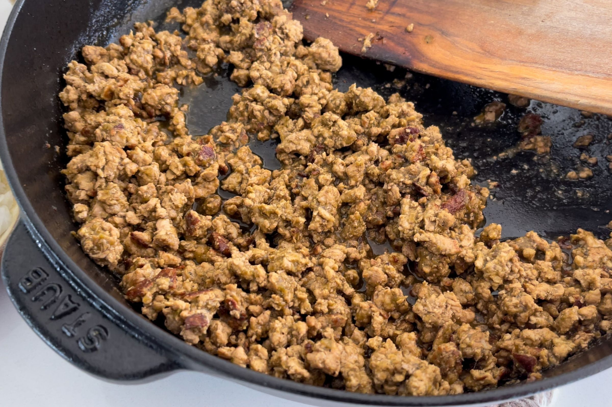

Recipes
Venezuelan Arepas
Origin: Venezuela Source: Healthier Steps Category: Main dish
Mix cornbread with water and salt and form them into several discs. Cook it on an oiled skillet until it is crisp on the outside. Then place into a preheated oven. When they are nice and crisp, split the arepas and fill them with beans, cheese, meat, or vegetables.
Recipe Ingredients
- 2 cups of cornmeal
- 2 ½ cups of water
- 1 tsp of salt
- 1 tsp of vegetable oil
- your choice of filling
Recipe Steps
- Preheat oven to 400F
- Pour water into large bowl
- Dissolve the salt into the water
- Slowly add cornmeal
- Mix until the water salt and cornmeal are all blended
- After it is blended, set the bowl aside for 5 minutes
- Make your hands wet and begin to pat the dough into discs
- Keep creating discs (make sure there are no cracks) and place them onto a nonstick pan with vegetable oil
- Flip each arepa after 5 minutes
- Place the arepas onto a baking sheet and place them into the preheated oven
- After 10 minutes, remove them, cut them open and fill them with your desired ingredients.
Additional Food images

Tomato basil pasta
Origin: Italian Source: Bon appetit Category: Main dish
This recipe is a fantastic way to step up your pasta game without taking too much more of your time. It tastes way better than basic pasta with jarred sauce! I originally found this when my sister made it, and got the recipe off of Bon Appetit’s website. PS avoid using the shaker parmesan – I used that the first time I made this and it drew down the quality of the dish.
Recipe Ingredients
- pasta
- tomatoes (any larger than cherry)
- basil
- red wine vinegar
- extra virgin olive oil
- crushed red pepper
- finely grated block of parmesan
Recipe Steps
- cut tomatoes along equator
- squeeze juice and seeds out of tomatoes and discard
- cut juiced tomatoes into small-ish pieces
- smush down with large spoon to release some leftover juices
- add in vinegar, olive oil, crushed red pepper and half of parmesan
- let marinate for half an hour
- add basil
- cook pasta
- toss marinade with cooked pasta and serve topped with remaining parmesan
Additional Food images


Mapo Tofu
Origin: Venezuela Source: Own recipe Category: Main dish
Need something smooth and spicy? Mapo Tofu is a simple tofu dish from Sichuan China. It's great over rice and easy to prep/save for college students! This recipe is for people who want to try authentic Chinese food but do not have Sichuan spices to use.
Recipe Ingredients
- 1 pack silken tofu
- 2 green onions, thinly sliced
- 1/2 lb ground pork
- 1 pack mapo tofu sauce (store bought)
- 3 cloves minced garlic
- soy sauce to taste
- 2 tbsp cooking oil
Recipe Steps
- Brown pork in wok with oil for 4-5 minutes
- Add sauce and garlic, stir fry for 2 minutes
- Add tofu and mix lightly as to not break up the tofu too much, until heated through
- Add soy sauce, green onion and dish up
Additional Food images
